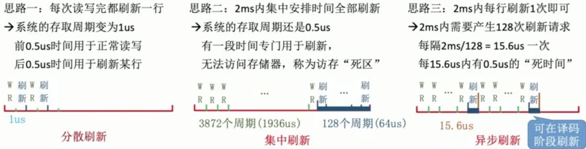
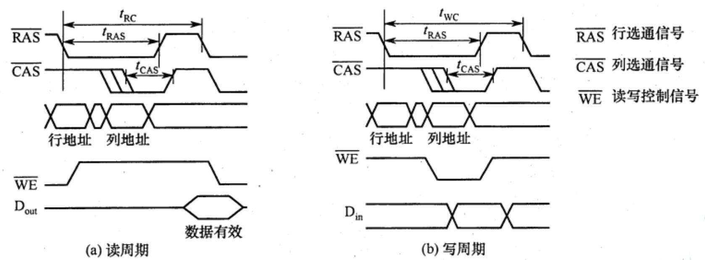
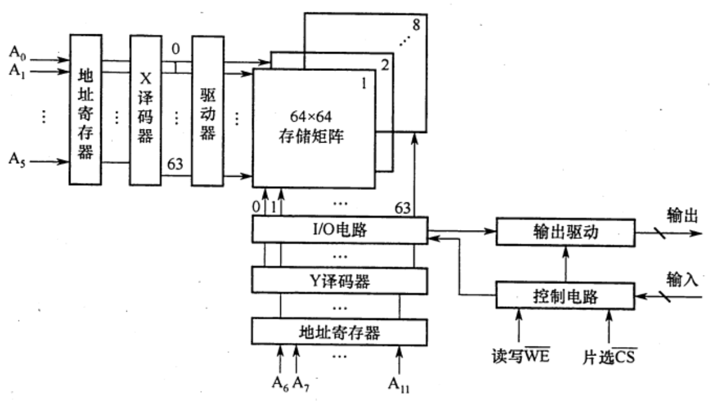
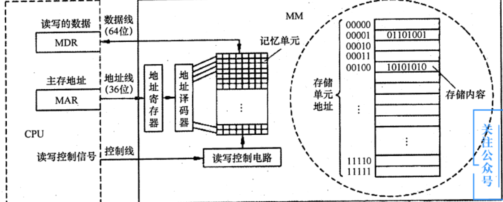
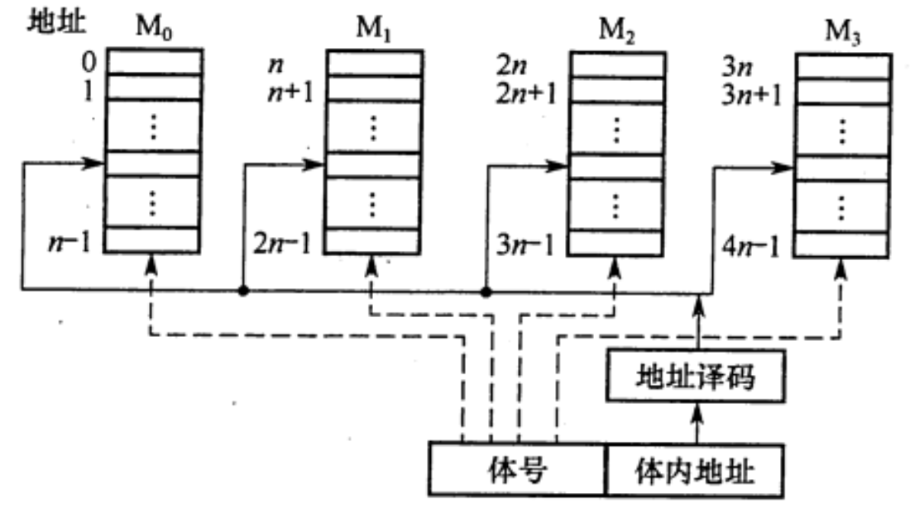
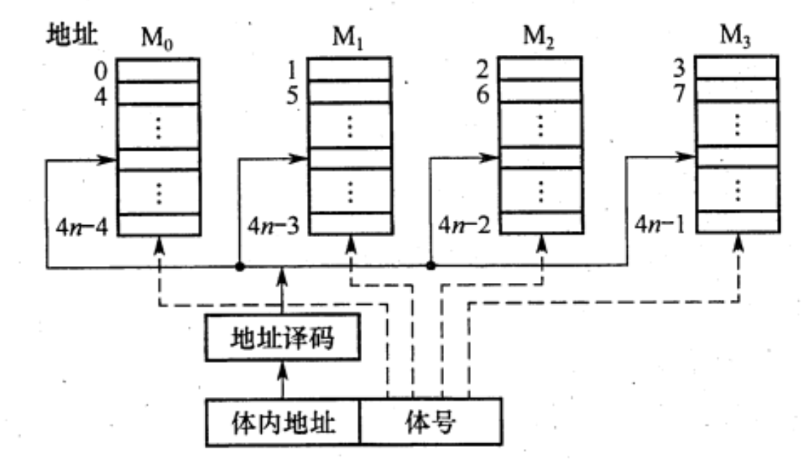

2022.05.07
内容总览：
- SRAM概念
- DRAM
- 存储元、存储单元、存储体
- 集中刷新、分散刷新、异步刷新
A.RAM B.ROM C.RAM和ROM D.均不完善
【答案】：C。因计算机的操作系统保存于硬盘上，所以需要 BIOS 的引导程序将操作系统引导到主存(RAM）中，而引导程序则固化于ROM中。
通常把存放一个二进制位的物理器件称为存储元，它是存储器的最基本的构件。地址码相同的多个存储元构成一个存储单元。若干存储单元的集合构成存储体。
静态随机存储器(SRAM)的存储元是用双稳态触发器（六晶体管MOS)来记忆信息的。因此即使信息被读出后，它仍保持其原状态而不需要再生（非破坏性读出）。
SRAM的存取速度快，但集成度低，功耗较大，价格昂贵，一般用于高速缓冲存储器。
与SRAM的存储原理不同，动态随机存储器(DRAM)是利用存储元电路中栅极电容上的电荷来存储信息的，DRAM的基本存储元通常只使用一个晶体管，所以它比SRAM的密度要高很多。
相对于SRAM来说，DRAM具有容易集成、位价低、容量大和功耗低等优点，但DRAM的存取速度比SRAM的慢，一般用于大容量的主存系统。
DRAM电容上的电荷一般只能维持1~2s,因此即使电源不断电，信息也会自动消失。为此，每隔一定时间必须刷新，通常取2s，称为刷新周期。存储器的刷新就是对其内部所有存储芯片同时进行刷新 [1]。刷新时不能访存，刷新会等待正在进行的访存的结束 [1]。常用的刷新方式有3种：
1)集中刷新：指在一个刷新周期内，利用一段固定的时间，依次对存储器的所有行进行逐一再生，在此期间停止对存储器的读写操作，称为“死时间”，又称访存“死区”。
优点是读写操作时不受刷新工作的影响；缺点是在集中刷新期间（死区）不能访问存储器。
2)分散刷新：把对每行的刷新分散到各个工作周期中。这样，一个存储器的系统工作周期分为两部分：前半部分用于正常读、写或保持：后半部分用于刷新。这种刷新方式增加了系统的存取周期，如存储芯片的存取周期为0.5s,则系统的存取周期为1μs。优点是没有死区；缺点是加长了系统的存取周期，降低了整机的速度。
3)异步刷新：异步刷新是前两种方法的结合，它既可缩短“死时间”，又能充分利用最大刷新间隔为2s的特点。具体做法是将刷新周期除以行数，得到两次刷新操作之间的时间间隔t,利用逻辑电路每隔时间t产生一次刷新请求。这样可以避免使CPU连续等待过长的时间，而且减少了刷新次数，从根本上提高了整机的工作效率。
DRAM的刷新需注意以下问题：①刷新对CPU是透明的，即刷新不依赖于外部的访问；
②动态RAM的刷新单位是行，由芯片内部自行生成行地址；③刷新操作类似于读操作，但又有所不同。另外，刷新时不需要选片，即整个存储器中的所有芯片同时被刷新。
例：DRAM存储芯片MCM4027,其字位结构为4K×1位，存储矩阵为64行×64列。每次刷新操作刷新存储矩阵的一行，刷新操作周期数是多少？
答案：64（每次刷新一行，一共64行）

三种刷新方式网络资料
我的总结
存储元(最基本) -[地址码相同]> 存储单元 -> 存储体
SRAM 非破坏性读出, 快, 贵, Cache
DRAM 破坏性读出, 刷新, 刷新周期(通常)T=2s
集中刷新, 死时间(死区)
我的理解是，就像学校上课。全班统一上下课，下课时同学按学号依次去厕所。（下课时就是死时间）
分散刷新, 无死时间(把刷新容到读取操作后边)
我的理解是，就像学校上课。自习课，没人盯着，每个同学想上厕所可以随时去。
异步刷新, 减少死时间
我的理解是，就像学校上课。假如全班72分钟就要去一轮厕所，一共有36个同学，那么每两分钟就让一个同学去厕所，剩下同学全上课。(不用像集中刷新一样，某个同学上厕所时全班都不能上课，减少了死时间)
注意SRAM和DRAM都是易失性！DRAM用刷新，SRAM不用刷新。

我的总结：
- 数据通路送行地址，同时行选通信号有效，持续$t_{RAS}$
- 数据通路送列地址，同时列选通信号有效，持续$t_{CAS}$
- 读周期：读写控制信号WE在CAS有效前变成低电平
- 写周期：读写控制信号WE在CAS有效前变成高电平，数据在CAS前在数据总线上保持稳定
| 项目 | SRAM | DRAM |
|---|---|---|
| 存储信息 | 触发器 | 电容 |
| 破坏性读出 | 否 | 是 |
| 需要刷新 | 否 | 是 |
| 送行列地址 | 同时送 | 分两次送 |
| 速度 | 快 | 慢 |
| 集成度 | 低 | 高 |
| 存储成本 | 高 | 低 |
| 主要用途 | Cache | 主存 |
| 支持随机访问 | 是 | 是 |

1)存储体（存储矩阵）。存储体是存储单元的集合，它由行选择线(X)和列选择线(Y)来选择所访问单元，存储体的相同行、列上的位同时被读出或写入。
2)地址译码器。用来将地址转换为译码输出线上的高电平，以便驱动相应的读写电路。
3)I/O控制电路。用以控制被选中的单元的读出或写入，具有放大信息的作用。
4)片选控制信号。单个芯片容量太小，往往满足不了计算机对存储器容量的要求，因此需用一定数量的芯片进行存储器的扩展。在访问某个字时，必须“选中”该存储字所在的芯片，而其他芯片不被“选中”，因此需要有片选控制信号。
5)读/写控制信号。根据CPU给出的读命令或写命令，控制被选中单元进行读或写。
ROM和RAM都是支持随机存取的存储器，其中SRAM和DRAM均为易失性半导体存储器。而ROM中一旦有了信息，就不能轻易改变，即使掉电也不会丢失，它在计算机系统中是算供读出的存储器。ROM器件有两个显著的优点：

SRAM各种线（SRAM没有地址复用技术）：
- 1024x8芯片的地址线：$2^{10}=1024\to$地址线10根（1024代表1024个存储字）
- 1024x8芯片的数据线：数据线8根（8代表一个存储字有8位）
- 读写控制线：1～2根，随机应变
- 片选线：有几片就几根（一般1根）
DRAM各种线（默认采用地址复用技术）：
- 1024x8芯片的地址线：$2^{10}=1024\to$地址线5根（地址复用后10变成5）
- 1024x8芯片的数据线：数据线8根
- 读写控制线：1～2根，随机应变
- 列选通线；片选线$\to$行选通线：2根
地址复用技术代表行列地址两次传入，地址线/2，DRAM一般采用地址复用技术
$2+2+8+10/2=17$
$4M\to 2^{22}\to 22位$,默认采用地址复用技术, 11位
11+8 = 19
指令：[高位<- ... ->低位]


【答案】：
一个芯片8位，每次读32bit。说明是低位交叉编址。如果是高位的连续的地址第一个字要恢复一下。
804001A->A->1010->后两位是10->第三个芯片，double是64位，要读三次：
1: --xx 2: xxxx 3: xx--
[2] 引用百度网友回答
答案：3
[1]. 计算机原理(100)国防科技大学 5.2.6 DRAM的刷新. https://www.youtube.com/watch?v=ve895s6YPpw
[2]. http://zhidao.baidu.com/question/1760263514660139388/answer/3826180088